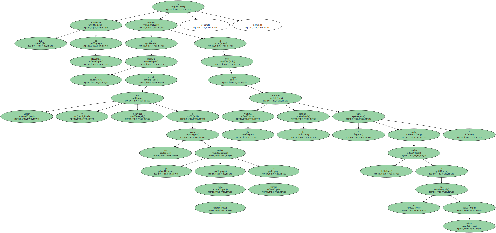
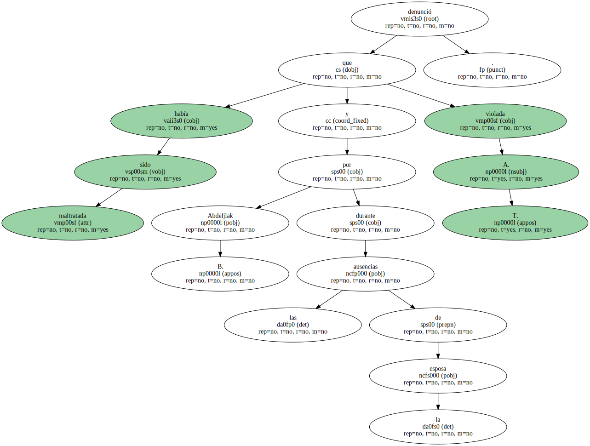
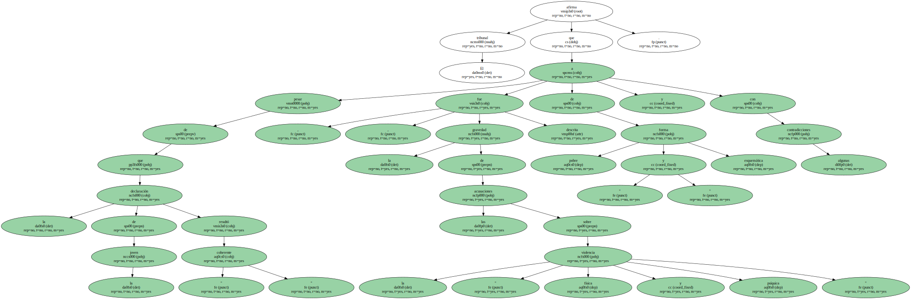
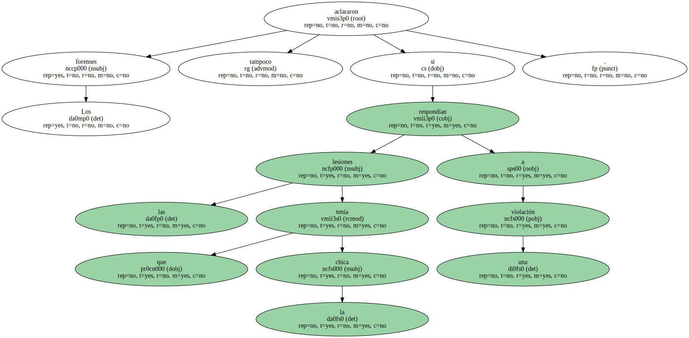
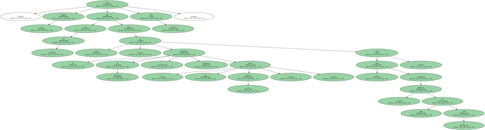

La Audiencia de Barcelona ha absuelto a un marroquí acusado de violar y esclavizar a una menor que estaba a su cargo en España , al creer que la víctima presentó la denuncia " para evitar la vuelta a su país de origen ".
La sentencia señala que la madre de A. T. , de 15 años , la envió en agosto de 1996 a casa del acusado y de su esposa en El Prat de Llobregat para que " cuidaran de ella " , lo que no sucedió , según la joven.

A. T. denunció que había sido maltratada y violada por Abdeljlak B. durante las ausencias de la esposa.
El tribunal afirma que , a pesar de que la declaración de la joven resultó " coherente " , la gravedad de las acusaciones sobre la " violencia física y psíquica " fue descrita de forma " pobre y esquemática " y con algunas contradicciones.
Los forenses tampoco aclararon si las lesiones que tenía la chica respondían a una violación.
Para la sala , la denuncia podía tener como objetivo evitar tanto " las dificultades de convivencia y económicas " que pasaba la familia , " así como la vuelta a Marruecos , donde vivía su madre ".
